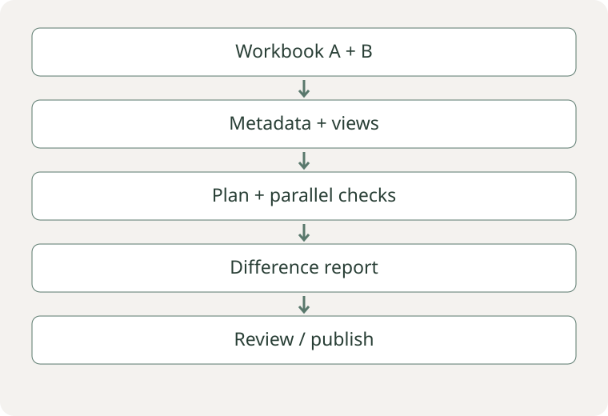

Spot: how we turned two weeks of manual review into 30 minutes of quality assurance

TL;DR. At NPS Prism, Bain's customer-experience benchmarking business, each quarterly delivery of a Tableau workbook (~150 charts) went through two weeks of manual review by four people, and errors still slipped through. I created Spot, a tool that compares two workbooks data point by data point through Tableau's APIs. It became the official Data Quality Gateway before publication.
- 4 people × 2 weeks → 1 person × 30 minutes per validation cycle
- 100% of data points checked, compared with a sample reviewed by people
- 6–8× shorter runtime (3–4 hours → 30 minutes) through parallelism
- Became the largest product in the NPS Prism data team
1. Context: a business that sells trust
In 2003, Fred Reichheld of Bain & Company published “The One Number You Need to Grow” in Harvard Business Review, introducing the Net Promoter Score (NPS). Two decades later, some version of NPS is used by roughly two-thirds of the Fortune 1000.1
In 2019, Bain launched NPS Prism, its competitive NPS benchmarking business. It shows how a company compares with named competitors at each episode of the customer journey.2 A bank might discover, for example, that it is losing ground in digital experience to a particular competitor within a particular customer segment.
Each delivery had three stages:
- Survey design. The Client Engagement team—the commercial team working with the client from requirements gathering through presentation—identifies what the client wants to understand (credit cards, the app, service, promotions…) and translates it into a questionnaire with conditional branches. The longest path exceeds 120 questions.
- Panel collection. Specialist panel providers distribute the survey to tens of thousands of respondents per wave, across social class, age, gender, region and other dimensions. Representativeness is monitored throughout collection.
- Engineering and delivery. Data is ingested from panel providers' APIs into a medallion data lake (bronze → silver → gold). The gold layer feeds a Tableau workbook with ~50 dashboards and ~150 charts, sold through subscriptions.
Survey → collection → bronze / silver / gold → Tableau → review → delivery. Spot checks the workbook; it does not replace survey-representativeness checks.
Behind this was an industry × region matrix (Banking LatAm, Auto Europe, Insurance APAC…), with specialist analysts responsible for quality and insights in each cell.
The subscription was not a one-off purchase: the cycle repeated every quarter, typically under annual contracts covering four waves. Clients act on the findings—restructuring a card product or changing a rewards programme—and measure the effect in the next wave.
This is the central idea of the case:
NPS Prism sells more than insights. Above all, it sells trust.
As Reichheld put it at launch: “Finally, there is Net Promoter benchmarking data you can count on.”2 Clients make investment decisions and change strategic direction based on these numbers. Bain also has a ZD (Zero Defect) principle: review as many times as necessary so that nothing incorrect reaches the client.
2. The problem: when the past changes without warning
Between waves, clients can change almost everything: the target audience, questions and analytical segments. Each change introduces two risks.
Risk 1: schema changes. The survey structure changes and the data no longer has the same format.
Risk 2: business-rule changes that rewrite history. This is the more subtle risk. Imagine a bank with three income segments:
| Segment | Monthly income range |
|---|---|
| Low income | up to R$2,000 |
| Middle income | R$2,000–R$15,000 |
| High income | above R$15,000 |
After restructuring, the bank creates a fourth segment: Ultra-high income (above R$50,000). If the rule only applies going forward, waves become an apples-to-oranges comparison. It therefore needs to be applied retrospectively. But an incorrect backfill changes the insight:
Three months ago, the credit card was performing well among high-income customers. The new wave shows a negative result. You open the dashboard from three months ago to compare—and it now shows a negative result too. Historical data has been corrupted, along with trust.
Synthetic example: segment A had an NPS of 32 in the previous wave. After reprocessing, the same slice returns 28. Comparison flags the change; review determines whether it is expected or an error.
The existing process: before each publication, 3–4 people from Client Engagement and analytics spent roughly two weeks reviewing workbook data points: charts, tooltips and underlying-data downloads. Reviewing everything was impossible, and a manual process inevitably carried error risk. Errors had already slipped through.
3. My role
I was the architect and developer of Spot within the NPS Prism data engineering team:
- Idea: I identified that Tableau Server exposed not only metadata through its APIs, but also the data behind each sheet. This enabled automated, granular comparison.
- Architecture and implementation: API wrapper, CLI, comparison engine, parallelism and the execution-plan system (dry run).
- Timeline: roughly three months, in 2023.
4. The solution: Spot
The Analytics Engineer selects two workbooks, such as the previous wave and the publication candidate. Spot:
- Traverses the workbook → dashboard → sheet hierarchy through the API.
- Extracts each sheet's data from both workbooks.
- Compares each data point, aligning keys and identifying changed or missing values.
- Reports all differences in an Excel report at several levels: missing or renamed sheets, categories present in only one version (such as a new segment), and changed values.
Key decisions
1. Predictability: dry run and execution plan. (the hardest decision)
The first version was a CLI that simply ran. Users did not know how many comparisons would be made or how long they would take. Leadership asked for predictability. I redesigned the core to separate plan definition from execution: tasks are organized before extraction and comparison run. The available implementation expresses this through task objects and containers linked by dependencies, without a fluent API. This allowed Spot to:
- generate a plan (sheets, comparisons and estimated effort) before extracting and comparing data;
- inspect the plan and execute it in a separate stage;
- provide execution progress.
RECONSTRUCTED EXAMPLE — not output from the original CLI
Workbooks: baseline / candidate
Comparable sheets: 3
Plan: extract → align keys → compare → report
Execution: after reviewing the plan2. Two APIs and direct requests calls instead of the official library.
The official library (tableauserverclient) did not expose what I needed. I combined the REST API (view data) and Metadata API (workbook structure) in a custom wrapper over requests.
3. Object-oriented design instead of a procedural script.
The Tech Lead preferred a more direct procedural approach. I kept an object-oriented design with classes, inheritance and polymorphism. That made it possible to add dry runs and new checks without rewriting the core.
4. Standard library first.
I used Python's standard library for concurrency, I/O and the CLI, together with pandas, NumPy and requests for data and integration. Fewer dependencies meant less adoption friction in a team whose focus was not software development.
5. Parallelism by sheet.
Each sheet is independent and comparison is dominated by I/O. Parallel calls reduced runtime from 3–4 hours to ~30 minutes.
5. Results
The figures below are reported in the original case. They have not been independently recalculated or audited from the archives. The development timeline is also my estimate.
| Metric | Before | After |
|---|---|---|
| Effort per validation cycle | 3–4 people × ~2 weeks | 1 person × ~30 min |
| Coverage | sample reviewed by people | 100% of data points |
| Process | manual, subject to error | automated, reproducible, auditable through reports |
| Errors that would reach clients | had occurred before | at least one real error caught before publication |
Reported effort per cycle: 3–4 people for roughly two weeks → one person for roughly 30 minutes. This comparison involves human effort and execution time; it is not an independent cost measurement.
- Order of magnitude: four people × two weeks ≈ 320 person-hours per cycle. With the 3–6 clients served when I left and four waves per year, that represents ~3,800–7,700 person-hours/year freed up. Across the entire client base, the figure scales further. (estimate)
- Became the official Data Quality Gateway: no workbook went to a client without passing through Spot.
- Became the largest product in the NPS Prism data team.
| Sheet | Key | Baseline | Candidate | Review |
|---|---|---|---|---|
| Summary | Segment A / NPS | 32 | 28 | Changed value |
| Detail | New segment | Missing | Present | Structural change |
6. Lessons
Technical lessons
- Knowing the language well pays off. Separating planning from execution, object-oriented design and concurrency are what turned a three-month tool into infrastructure.
- Look at what the platform already exposes. The solution did not require a new system; it came from studying the APIs of a platform the business already used.
- Predictability is a feature. Dry runs did not change the results, but they changed users' confidence in the tool.
People: what I would do differently
Leadership told me more than once that they did not have clarity on what I was doing or why. I was not sharing technical decisions and their reasoning sufficiently. I recognize that this made communication with the team harder, particularly when concepts such as parallelism and object-oriented design were not yet familiar to everyone.
If I did it again, I would have a communication plan from the start: recorded decisions and their rationale, checkpoints with leadership, and team involvement in technical discussions. A good technical decision that nobody understands is a risky decision for the organization.
Technical appendix
Examples adapted from the available Spot implementation. They retain the mechanisms described, with names and interfaces simplified for readability. They contain no corporate connection, configuration or client data.
A. Define the plan before running it
Adapted from main_parallel_definition and main_parallel_execution. This excerpt takes prepared tasks; metadata discovery, filters and connection configuration are omitted.
def build_plan(tasks_a, tasks_b, workers):
downloads_a = TaskContainer(tasks_a, workers)
downloads_b = TaskContainer(tasks_b, workers)
comparisons = CompareMultipleSheetsTask({
"download_sheets_tasks_a": downloads_a.tasks,
"download_sheets_tasks_b": downloads_b.tasks,
})
task_table = pd.concat([
downloads_a.as_dataframe(),
downloads_b.as_dataframe(),
comparisons.as_dataframe(),
]).reset_index(drop=True)
return {
"execution_plan": task_table,
"set_of_tasks": [downloads_a, downloads_b, comparisons],
}
def execute_plan(plan):
for stage in plan["set_of_tasks"]:
stage.parallel_tasks_execution()
return planThe plan holds download containers for A and B and a comparison task referencing those same objects. Building it does not download sheet data. Execution preserves the dependency order: downloads must finish before comparison. The task list can therefore be inspected before the expensive stage.
B. Align keys and classify differences
Adapted from compare_sheets. It preserves the outer join on keys and the distinction between absence and mismatch. This readable version uses the merge indicator to identify one-sided rows explicitly and pandas to handle nulls. It does not add numerical tolerance to the original implementation.
import pandas as pd
def compare_values(left, right, keys, fields):
joined = left.merge(
right, on=keys, how="outer", suffixes=("_a", "_b"),
indicator=True, validate="one_to_one",
)
differences = []
for _, row in joined.iterrows():
for field in fields:
a, b = row[f"{field}_a"], row[f"{field}_b"]
missing_side = row["_merge"] != "both"
both_null = pd.isna(a) and pd.isna(b)
same = both_null or (
not pd.isna(a) and not pd.isna(b) and a == b
)
if missing_side or not same:
differences.append({
"key": tuple(row[key] for key in keys),
"field": field,
"type": "absence" if missing_side or
pd.isna(a) or pd.isna(b) else "mismatch",
"baseline": a,
"candidate": b,
})
return pd.DataFrame(differences)An inner join would hide categories that disappeared. An outer join keeps those rows visible. Composite keys must uniquely identify a row; this version validates that condition to avoid silently multiplying records. Nulls on both sides are equivalent, while a single changed value is still reported.
C. Distribute work across workers
Adapted from TaskContainer.tasks_assignment and parallel_tasks_execution_definition. It preserves status filtering, worker assignment and ThreadPoolExecutor. Chunking is simplified and results are collected inside the executor context.
from concurrent.futures import ThreadPoolExecutor
def run_parallel(tasks, workers):
if not workers:
raise ValueError("At least one worker is required")
pending = [task for task in tasks
if task.status != TaskStatus.SUCCESS]
batches = [pending[i::len(workers)]
for i in range(len(workers))]
def run_batch(batch, worker):
for task in batch:
task.set_worker(worker)
task.execute()
return batch
with ThreadPoolExecutor(max_workers=len(workers)) as executor:
futures = [executor.submit(run_batch, batch, worker)
for batch, worker in zip(batches, workers)]
return [future.result() for future in futures]Each worker receives a batch and executes its tasks sequentially, while batches progress in parallel. The worker count bounds simultaneous calls. Successful tasks are excluded to avoid repeated work; this filter alone is not a complete retry or persistence system.
D. Levels of reported differences
| Level | Example |
|---|---|
| Workbook structure | dashboard present in only one workbook |
| Sheet structure | renamed or missing sheet |
| Dimension | new (“Ultra-high income”) or removed category |
| Value | metric with a changed value |
E. Known limitations
- Not all Tableau filters could be manipulated through the API. Changing filter values and reading defaults exposed in the UI remained partially unresolved.
- There was no automatic mapping between different schemas: structural changes were reported, not reconciled.
1. Reichheld, F. The One Number You Need to Grow. Harvard Business Review, December 2003. See also Net Promoter Score (Wikipedia).
2. Bain & Company launches NPS Prism (press release, March 6, 2019); npsprism.com.